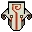
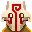
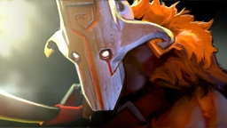
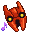
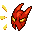

<!DOCTYPE html>

<html>
    <head>
        <meta charset="UTF-8">
        <meta name="viewport" content="width=device-width, initial-scale=1.0">
        <title>Juggernaut - Dota 2</title>
        <link rel="stylesheet" href="app.css">
    </head>

</html>

<body>
    <main>
        <header>
            <h1> Juggernaut </h1>
                <nav>
                     <ul>
                        <li><a href="https://www.google.com/">Other Resource</a></li>
                        <li><a href="about.html">Creator</a></li>
                        <li><a href="form.html">Form Practice</a></li>
                        <li><a href="tournament.html">Tournament Form</a></li>
                        <li><a href="dota2table.html">Juggernaut Abilities</a></li>
                    </ul>
                </nav>
        </header>
    <hr>
    <figure>
    
    <figcaption>Juggernauts Hero Art</figcaption>
    </figure>
    <p>
    <i>Yurnero</i>, the <b>Juggernaut</b>, is a melee agility hero whose abilities allow him to sprint into battle and recklessly devastate enemies in an impenetrable flurry of blades.
    </p>

    <p>
    His abilities grant invulnerability and spell immunity, turning him into an unstoppable force on a hairpin. Juggernaut is strong both offensively and defensively, and deals heavy damage both physical and magical with his Blade Fury and Omnislash ultimate, but he possesses below average strength and intelligence attributes, so he does not have as much health and mana as other heroes and is vulnerable when his abilities are on cooldown. For this reason, although his abilities make him powerful even in the early game, he cannot charge into forces without restraint until farmed and is usually played as a carry.
    </p> 


<h2>Counter Picks</h2>
<ul>
    <li>Axe</li>
    <li>Bane</li>
    <li>Chaos Knight</li>
    <li>Enigma</li>
    <li>Legion Commander</li>
    <li>Mars</li>
    <li>Pugna</li>
    <li>Omniknight</li>
    <li>Outworld Destroyer</li>
    <li>Ursa</li>
    <li>Pudge</li>
    <li>Windranger</li>
</ul>

<hr>

<h2>Items Counters</h2>
    <ul>
        <li>Anything with Evasion</li>
        <li>Eul's Scepter of Divinity </li>
        <li>Ghost Scepter</li>
        <li>Lotus Orb</li>
        <li>Shadow Blade</li>
        <li>Glimmer Cape</li>
        <li>Skull Basher</li>
        <li>Aeon Disk</li>
    </ul>

<hr>

    <h2>Tips and Tricks</h2>
    <h3>General Advice</h3>
        <ul>
            <li>Farm<sub>[1]</sub> + Kills<sub>[2]</sub> = Win<sub>[3]</sub></li>
            <li>Juggernaut can use Blade Fury to escape from being ganked from most heroes.</li>
            <li>Getting Phase Boots and using during Blade Fury will help Juggernaut chase down heroes for easy kills.</li>
        </ul>
    

    </main>
    <footer>
        <p>&#169;onroy 2021</p>
    </footer>

</body>